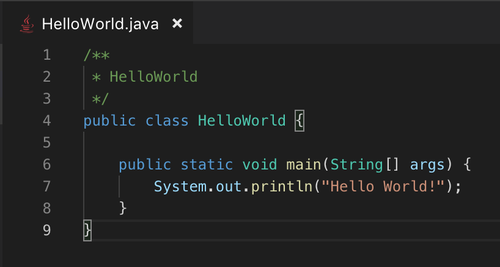

Java
Java — строго типизированный объектно-ориентированный язык программирования общего назначения. Появился в 1995 году, разработан компанией Sun Microsystems (в последующем приобретённой компанией Oracle).
сферы применения:
Создание мощных и масштабируемых веб-приложений.Например, с помощью фреймворков Spring, Struts и других.
Разработка мобильных приложений под платформу Android. Официальная интегрированная среда разработки Android Studio поддерживает Java как один из основных языков для создания Android-приложений.
Создание корпоративных приложений и информационных систем. Например, платформа Enterprise JavaBeans (EJB) предоставляет структуры и сервисы для разработки корпоративного ПО.
Научные исследования и анализ данных. Проекты вроде Apache Hadoop и Apache Spark предоставляют мощные инструменты для обработки и анализа больших объёмов данных с использованием Java.
Игровая индустрия. Многие онлайн-игры созданы с использованием Java, например, игра «Minecraft».
Создание финансовых приложений, торговых систем и биржевых платформ. Многие банки и финансовые учреждения используют Java для обеспечения надёжности и высокой производительности своих систем.
Разработка приложений для умных устройств и интернета вещей. Кроссплатформенность Java позволяет писать ПО для любых устройств.
